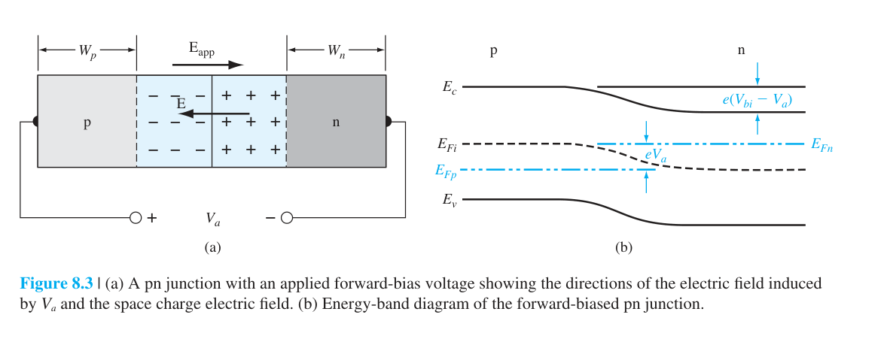
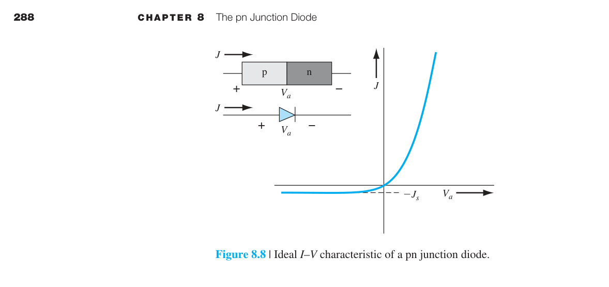
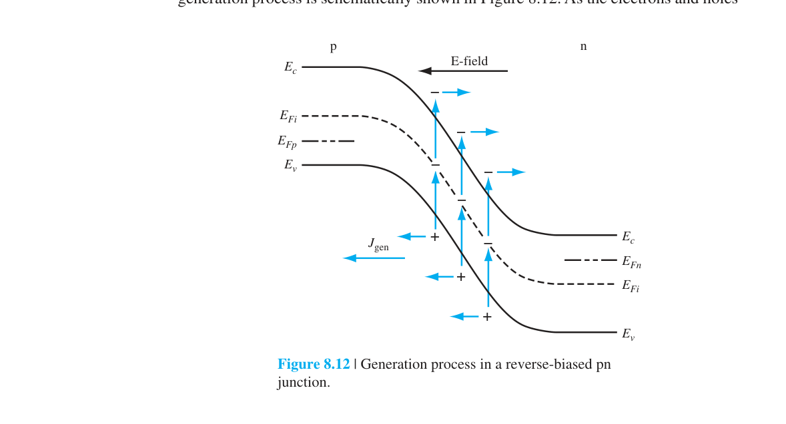
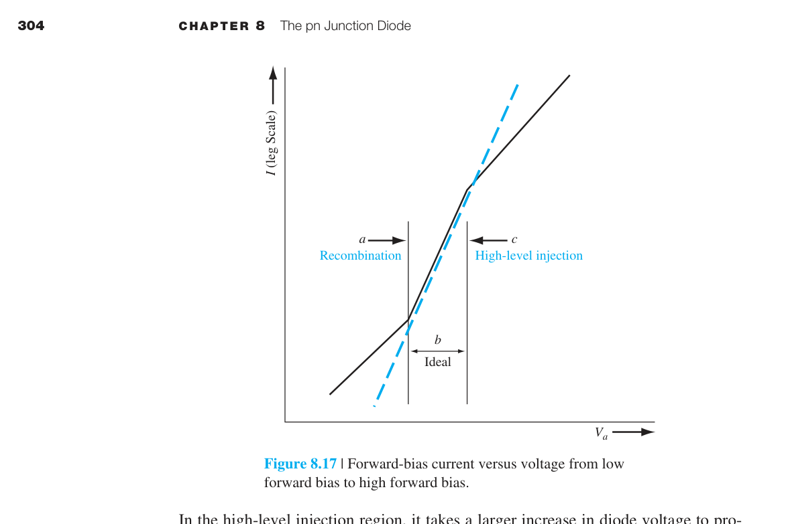
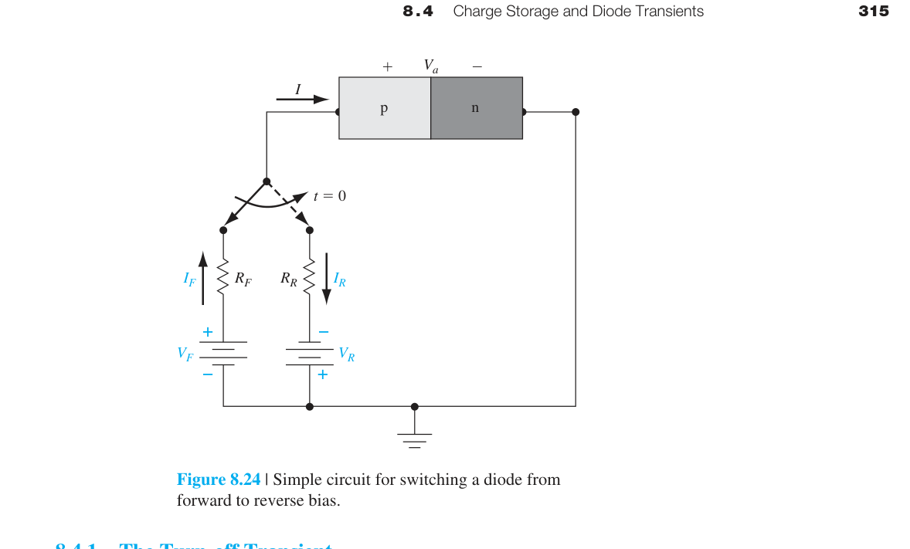
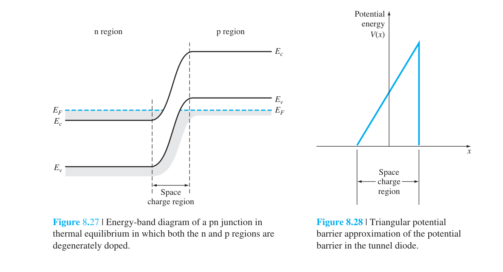
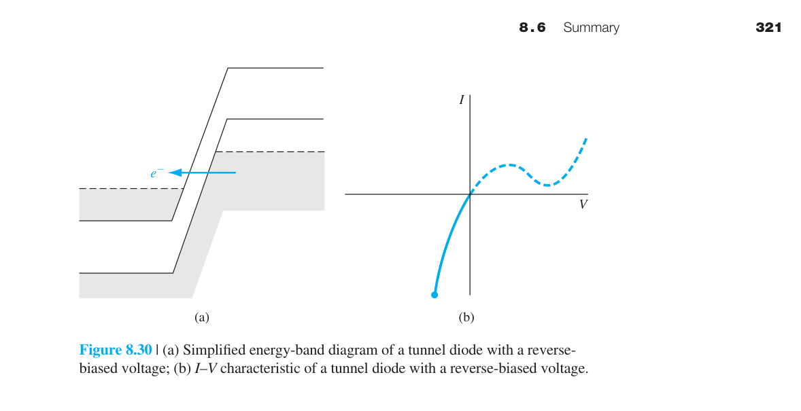

pn 接面二極體
第七章告訴我們 pn 接面「長什麼樣子」——能帶彎曲、空乏區、內建電位。本章回答工程師最關心的問題：當外加電壓時，pn 接面中有多少電流流動？答案就是半導體物理中最著名的公式——Shockley 理想二極體方程：$I = I_S(e^{eV_a/kT}-1)$。
本章的推導邏輯極其清晰，每一步都建立在前幾章的堅實基礎上：外加電壓→準 Fermi 能階分離（第六章）→少數載子邊界濃度改變（Shockley 邊界條件）→少數載子擴散進入中性區（第五章擴散方程）→擴散電流（第五章）→總電流。將所有前面學到的工具串聯起來，得到一個極其簡潔的結果。
在此基礎上，我們加入非理想效應（空乏區產生-復合電流、串聯電阻、高階注入）、頻率響應（擴散電容和小訊號模型）、和開關行為（反向恢復暫態）。這些是連接「理想 pn 接面物理」和「真實二極體元件行為」的橋樑。
2. Shockley 邊界條件：$p_n(x_n)=p_{n0}e^{eV_a/kT}$——外加電壓透過調變少數載子濃度來控制電流
3. 物理鏈：偏壓→降低障壁→少數載子注入→濃度梯度→擴散→電流
4. $I_S\propto n_i^2\propto e^{-E_g/kT}$——反向飽和電流對溫度極度敏感（∼每 6°C 翻一倍）
5. 順向壓降溫度係數 $\approx-2$ mV/°C——二極體可當廉價溫度感測器
6. 空乏區產生-復合電流→低電流區 $n=2$ 斜率（偏離 $n=1$ 理想行為）
7. 串聯電阻 $R_s$→高電流區 $I$–$V$ 偏離指數
8. 小訊號模型：擴散電導 $g_d=eI/kT$，擴散電容 $C_d=\tau I/kT$——兩者都正比於偏壓電流
9. 短二極體（$W\ll L$）：$I_S\propto 1/W$，載子呈線性分布→電流大於長二極體
10. 關閉暫態：儲存時間 $t_s\approx\tau\ln(1+I_F/I_R)$——少數載子儲存是速度限制的根源

8.1.1–8.1.3 Shockley 邊界條件——電壓如何「注射」少數載子 ⭐

在熱平衡時（$V_a=0$），空乏區邊緣的少數載子濃度等於熱平衡值：p 側邊界的電子濃度 $=n_{p0}=n_i^2/N_a$；n 側邊界的電洞濃度 $=p_{n0}=n_i^2/N_d$。
當施加順向偏壓 $V_a>0$（p 側接正、n 側接負）時，空乏區的電位障壁從 $V_{bi}$ 降低到 $V_{bi}-V_a$。降低的障壁使得 n 側的大量電子更容易越過障壁進入 p 側，p 側的大量電洞更容易越過障壁進入 n 側→少數載子注入。

Shockley 邊界條件是本章最關鍵的公式——它將外加電壓與少數載子濃度連結起來：
這個公式的物理圖像來自第六章的準 Fermi 能階：在順向偏壓下，空乏區中 $E_{Fn}$ 和 $E_{Fp}$ 分離 $eV_a$。在空乏區邊緣，$pn = n_i^2 e^{eV_a/kT}$。因為多數載子濃度幾乎不變（低階注入），少數載子濃度必然增至 $p_{n0}e^{eV_a/kT}$。
8.1.4 理想二極體電流-電壓關係 ⭐

注入的過量少數載子從空乏區邊緣擴散進入中性區，同時與多數載子復合。在中性區中沒有電場→只有擴散。穩態擴散方程：$D_p\,d^2\delta p_n/dx^2 = \delta p_n/\tau_{p0}$。
解為指數衰減：$\delta p_n(x) = \delta p_n(x_n)\,e^{-(x-x_n)/L_p}$。$L_p=\sqrt{D_p\tau_{p0}}$ 是電洞擴散長度。
擴散電流在 $x=x_n$ 處：$J_p(x_n) = -eD_p(d\delta p_n/dx)|_{x_n} = (eD_p/L_p)\,\delta p_n(x_n) = (eD_p p_{n0}/L_p)(e^{eV_a/kT}-1)$。
同理可得 $J_n(-x_p)$。總電流為兩者之和：
$I_S$ 的物理意義：$I_S$ 是反向飽和電流——當 $V_a$ 為大負值（逆偏）時 $I\to -I_S$。$I_S\propto n_i^2\propto e^{-E_g/kT}$→對溫度極其敏感。室溫 Si pn 接面的 $I_S$ 通常在 $10^{-15}$–$10^{-9}$ A 範圍，取決於面積和摻雜。
8.1.5 溫度效應與串聯電阻——真實二極體的 I-V 特性
真實二極體的 I-V 特性偏離理想方程。兩個最重要的修正來自溫度和串聯電阻。
§8.1.7 溫度效應——$I_S$ 的劇烈溫度依賴性
理想反向飽和電流密度 $J_S$（或 $I_S$）對溫度極其敏感，這是因為 $J_S$ 中包含熱平衡少數載子濃度 $p_{n0}$ 和 $n_{p0}$，它們都正比於 $n_i^2$。而 $n_i^2$ 本身是溫度的強函數——從第四章可知 $n_i^2 = N_c N_v e^{-E_g/kT}$，其中狀態密度 $N_c, N_v \propto T^{3/2}$。將這些溫度依賴關係代入 $I_S$ 的表達式：
其中 $T^3$ 的因子來自三處貢獻的疊加：① $N_c N_v \propto T^3$——狀態密度本身隨溫度上升而增大，因為更高的溫度使載子可佔據更多的 $k$ 空間態；② 擴散係數 $D$ 對溫度的依賴（$D \propto \mu \propto T^{-3/2}$，來自晶格散射的遷移率溫度關係）；③ 擴散長度 $L = \sqrt{D\tau}$ 中 $D$ 和壽命 $\tau$ 的綜合溫度效應。在室溫附近，$I_S$ 的溫度變化主要（>90%）由指數項 $e^{-E_g/kT}$ 主導——能隙 $E_g$ 出現在指數中意味著微小的溫度變化就能引起 $I_S$ 的巨大改變。這與 $n_i$ 隨溫度急劇變化的物理圖像完全一致：溫度升高→更多的價帶電子被熱激發到導帶→$n_i$ 增大→少數載子濃度增大→$I_S$ 增大。
$I_S$ 的溫度係數——定量推導：對 $I_S \propto T^3 e^{-E_g/kT}$ 取自然對數後對溫度微分：
室溫（$T = 300$ K）下對矽（$E_g = 1.12$ eV）：第一項 $3/T = 0.01$ K⁻¹，第二項 $E_g/kT^2 = 1.12/(0.0259 \times 300) \approx 0.144$ K⁻¹。指數項 $E_g/kT^2$ 的貢獻是 $3/T$ 項的 14 倍以上——因此在實用溫度範圍內，$3/T$ 項常被忽略，直接用 $(1/I_S)(dI_S/dT) \approx E_g/kT^2 \approx 0.144$ K⁻¹ 進行估算。換算成百分比：$I_S$ 每升高 1°C 約增大 14.4%。換算成更直觀的加倍規則：溫度每升高約 5–6°C，$I_S$ 就增加一倍（因為 $e^{0.144 \times 5} \approx 2.05$）。這與常見的工程經驗法則「Si pn 接面的反向飽和電流每升高 10°C 約增大四倍」一致（$e^{0.144 \times 10} \approx 4.2$）。作為對比，GaAs（$E_g = 1.42$ eV）的 $E_g/kT^2 \approx 0.183$ K⁻¹——溫度靈敏度甚至更高。
順向電壓的溫度係數——二極體作為溫度感測器：在固定順向電流下操作時，所需的外加電壓隨溫度升高而降低。從理想二極體方程 $I = I_S(T)\,e^{eV_a/kT}$ 出發，令 $I$ 保持常數，兩端取對數後對 $T$ 微分：
對室溫下的矽二極體，$V_D \approx 0.6$–0.7 V，$E_g/e = 1.12$ V，代入得 $dV_D/dT \approx -(1.12-0.65)/300 \approx -1.6$ mV/°C。文獻中常引用的 −2 mV/°C 是考慮了非理想效應（如串聯電阻的溫度效應和 $n_i$ 的附加依賴）後的典型值。這個近似線性的溫度係數使得 pn 二極體成為極其便利的固態溫度感測器——只需在固定小電流（∼10–100 µA，以避免自熱效應）下測量順向壓降 $V_D$，每 −2 mV 的變化對應溫度上升 1°C。這種「二極體溫度計」廣泛用於 IC 內部的片上溫度監測電路（如 CPU/GPU 的熱管理），因為它可以直接用晶片上的寄生 pn 接面實現，無需額外的感測元件。
從元件物理的角度來看，$dV_D/dT < 0$ 的根本原因是：溫度升高使本質載子濃度 $n_i$ 急劇增大→少數載子濃度提高→在相同外加電壓下產生更大的擴散電流→要維持相同的總電流，所需的外加電壓反而降低了。換句話說，溫度升高使二極體「更容易導通」——給定電壓下的電流增大，給定電流下的電壓降低。從能帶理論的角度詮釋：溫度升高→能隙略微縮小→$e^{-E_g/kT}$ 增大→$I_S$ 指數式增大→I-V 曲線向左移動。
串聯電阻 $R_s$
中性 n 區和 p 區、以及金屬接觸都有歐姆電阻。高電流時 $IR_s$ 壓降不可忽略→有效接面電壓 $=V_a-IR_s $R_s$ 的典型值：小訊號二極體 ∼1–5 Ω，功率二極體 ∼0.01–0.1 Ω。$R_s$ 可從 I-V 曲線的高電流偏離程度中提取：$\Delta V = IR_s$。 
8.1.6 物理總結——電流機制的完整圖像
在進入非理想效應之前，讓我們先整合 8.1 的所有結果。pn 二極體的電流由以下步驟串聯而成：
① 外加電壓改變接面處的少數載子濃度（Shockley 邊界條件）→$np = n_i^2 e^{eV_a/kT}$。
② 注入的少數載子以擴散方式遠離接面（濃度梯度驅動）→擴散長度 $L = \sqrt{D\tau}$ 決定了載子能走多遠。
③ 擴散電流正比於邊界處的濃度梯度→梯度正比於 $e^{eV_a/kT}-1$→指數 I-V 關係。
④ 少數載子在中性區內復合→電流隨距離衰減→被多數載子傳導到外部電路。
§8.1.8 短二極體——當中性區比擴散長度更短時
定義與物理圖像：前面 §8.1.4 推導的理想二極體方程基於「長二極體」近似——即中性 n 區的長度 $W_n$ 和中性 p 區的長度 $W_p$ 均遠大於各自的少數載子擴散長度 $L_p$ 和 $L_n$。但在許多實際元件結構中，中性區的幾何長度可能遠小於擴散長度：$W_n \ll L_p$ 或 $W_p \ll L_n$。這種元件稱為短二極體（short diode）。短二極體的關鍵物理差異在於：注入中性區的少數載子在抵達金屬歐姆接觸之前幾乎不發生復合——因為穿越中性區所需的時間 $\sim W_n^2/D_p$ 遠小於少數載子壽命 $\tau_{p0}$。而金屬-半導體歐姆接觸處具有極高的表面復合速度（接近無窮大），如同一道「理想的黑牆」，將抵達接觸面的多餘少數載子瞬間拉回熱平衡濃度 $p_{n0}$。
少數載子濃度分布——從指數衰減到線性分布：短二極體的穩態擴散方程與長二極體完全相同：$D_p\,d^2(\delta p_n)/dx^2 = \delta p_n/\tau_{p0}$。但邊界條件有所改變：在空乏區邊緣 $x=x_n$ 處仍適用 Shockley 邊界條件 $\delta p_n(x_n) = p_{n0}(e^{eV_a/kT}-1)$；而在金屬接觸處 $x = x_n + W_n$，多餘濃度被強制歸零：$\delta p_n(x_n+W_n) = 0$。對於通解 $\delta p_n(x) = A e^{(x-x_n)/L_p} + B e^{-(x-x_n)/L_p}$，當 $W_n \ll L_p$ 時，雙曲正弦函數 $\sinh(W_n/L_p)$ 可近似為其自變量 $W_n/L_p$。在這一極限下，指數函數退化為線性分布（如圖 8.11 中的虛線所示）：
這個線性分布的核心物理意義是：因為 $L_p \gg W_n$，復合項 $\delta p_n/\tau_{p0}$ 在整個中性區內幾乎可以忽略——載子就像在一條沒有「洩漏」的管道中進行純擴散傳輸。與長二極體的指數衰減 $e^{-x/L_p}$ 形成鮮明對比：長二極體中，注入的少數載子在中途就因復合而大幅衰減，只有少部分能到達遠端的接觸；而短二極體中，所有注入的載子都能「存活」到達接觸——只是在那裡被表面復合瞬間消滅。
短二極體的電流-電壓關係——一般形式：擴散電流密度正比於邊界處的濃度梯度。對於線性分布，梯度在整個中性區內為常數：$d(\delta p_n)/dx = -\delta p_n(x_n)/W_n$。將此梯度代入擴散電流公式 $J_p = -eD_p\,d(\delta p_n)/dx$，並加上 p 側的對稱貢獻，得到短二極體的完整 I-V 關係：
其中 $W_n$ 是中性 n 區的幾何長度（從空乏區邊緣到金屬接觸），$W_p$ 是中性 p 區的幾何長度。注意 $I_{S,\text{short}}$ 的表達式與長二極體的 $I_S$（公式 8.26）在結構上完全對應——唯一且關鍵的差別是分母中的擴散長度 $L$ 被幾何長度 $W$ 取代。
短二極體與長二極體的定量比較：長二極體的飽和電流 $I_S \propto 1/L$（$L_p$ 或 $L_n$ 為擴散長度），而短二極體的 $I_{S,\text{short}} \propto 1/W$（$W_n$ 或 $W_p$ 為中性區幾何長度）。因為 $W \ll L$，所以 $I_{S,\text{short}} \gg I_S$——在相同偏壓下，短二極體的電流遠大於長二極體。以典型矽 pn 接面為例：若 $L_p = 50$ µm 而 $W_n = 2$ µm，則短二極體的電流約為長二極體的 $50/2 = 25$ 倍。此外，在短二極體中擴散電流密度 $J_p(x)$ 在整個中性區內為常數（因為梯度恆定且無復合衰減），而在長二極體中 $J_p(x)$ 隨 $x$ 指數衰減——部分載子在到達接觸前就已復合，其能量以熱的形式散失在中性區中。
短二極體的雙向推廣：若中性 n 區為短（$W_n \ll L_p$）而中性 p 區為長（$W_p \gg L_n$），則飽和電流為 $I_S = eA(D_p p_{n0}/W_n + D_n n_{p0}/L_n)$——一個混合形式。反之亦然。在一般的 pn 接面中，由於一側的摻雜通常遠高於另一側（$N_a \gg N_d$ 或反之），電流往往由低摻雜側的少數載子主導——因此只需確認該側是「長」還是「短」即可決定用 $L$ 還是 $W$。
8.2 產生-復合電流——空乏區中的電流
理想二極體方程只考慮了中性區中的擴散電流。但空乏區內部也有電流——來自深層陷阱能階的 SRH 產生和復合（第六章）。
順向偏壓——復合電流

在順向偏壓下，空乏區中的 $np>n_i^2$→淨復合。復合率最高的地方在 $n\approx p$ 的區域（空乏區中的某處）。復合電流 $I_{\text{rec}}\propto e^{eV_a/2kT}$——斜率只有理想擴散電流的一半。在低順向偏壓時（$V_a<0.4$ V），$I_{\text{rec}}$ 可能大於擴散電流→非理想因子 $n\approx2$。
反向偏壓——產生電流
在反向偏壓下，空乏區中的 $np 理想二極體方程假設低階注入：注入的少數載子濃度 $\delta p$ 遠小於多數載子濃度 $n_0$。當順向電壓增大到使 $\delta p \approx n_0$ 時，高注入效應開始出現： ① 注入的少數載子改變了空乏區邊緣的電場→有效接面電壓降低→電流增長速度減慢（偏離 $e^{eV_a/kT}$ 指數）。 ② 多數載子濃度必須增加以維持電中性→多數載子也參與擴散→雙極傳輸效應更加顯著。 ③ I-V 關係從 $I \propto e^{eV_a/kT}$ 過渡到 $I \propto e^{eV_a/2kT}$——斜率減半，類似復合電流的行為，但物理機制完全不同。8.2.2 高注入效應——當理想方程失效
8.3 小訊號模型——pn 二極體的 AC 行為 ⭐

當二極體操作在 DC 偏壓點 $(V_{DQ}, I_{DQ})$ 附近疊加一個小 AC 信號時，非線性的指數關係可以線性化。
小訊號等效電路：順向偏壓的 pn 二極體在 AC 小訊號下等效為以下元件的並聯/串聯組合：
- $r_d$（擴散電阻）並聯 $C_d$（擴散電容）：這兩個元件描述中性區中少數載子的充放電行為。
- 串聯 $r_s$（串聯電阻）：中性區的歐姆電阻 + 接觸電阻。高頻時 $r_s$ 限制了二極體的品質因子 $Q$。
- 並聯 $C_j$（接面電容）：空乏區電容。反向偏壓時 $C_j$ 主導；順向偏壓時 $C_d \gg C_j$。
擴散電導 $g_d$
$g_d$（單位：S，西門子）或等效擴散電阻 $r_d=1/g_d=0.026/I_{DQ}$ Ω。$I_{DQ}=1$ mA→$r_d=26$ Ω。$I_{DQ}=1$ µA→$r_d=26$ kΩ。偏壓電流直接控制小訊號電阻。
擴散電容 $C_d$——二極體速度的物理限制
順向偏壓下注入中性區的過量少數載子需要時間來建立和消散→表現為電容：
對 $I_{DQ}=1$ mA，$\tau_{p0}=1$ µs：$C_d = (1/0.026)\times10^{-3}\times10^{-6} = 38$ nF。這遠大於典型的 $C_j$（∼pF 級）。
截止頻率：二極體的小訊號響應在 $f_c = 1/(2\pi r_d C_d) = 1/(2\pi\tau_{p0})$ 處開始衰減。對 $\tau_{p0}=1$ µs：$f_c \approx 160$ kHz。這就是為什麼普通 pn 二極體不適合高頻整流——需要使用壽命極短的快速恢復二極體或蕭特基二極體。
• 接面電容 $C_j$（第七章）：空乏區邊界空間電荷隨電壓變化。主導反向偏壓和低順向偏壓。$C_j\propto1/\sqrt{V_{bi}+V_R}$。
• 擴散電容 $C_d$（本章）：中性區中儲存的過量少數載子隨電流變化。主導順向偏壓。$C_d\propto I_{DQ}$。
• 順向偏壓下 $C_d\gg C_j$。這就是為什麼 pn 二極體在順向操作時速度受限——擴散電容使二極體無法快速響應高頻信號。蕭特基二極體（第九章）沒有少數載子儲存→$C_d\approx0$→開關速度遠快。
§8.4 電荷儲存與二極體暫態——pn 接面的開關行為
pn 接面二極體在電路中最常見的應用之一就是作為電子開關：順向偏壓時導通（on state，大電流）、反向偏壓時阻斷（off state，極小電流）。在電路設計中——特別是高頻整流、開關式電源供應器（SMPS）、和數位邏輯電路——二極體從導通切換到阻斷（或反之）的切換速度往往是決定系統性能的關鍵參數。本節深入分析二極體切換過程中的暫態物理機制：少數載子的電荷儲存效應（charge storage）是決定開關速度的根本原因——這一概念在後續章節中討論 BJT 和 MOSFET 的開關行為時將反覆出現。
§8.4.1 關斷暫態（Turn-off Transient）——為什麼二極體不能瞬間關斷

考慮一個最典型的開關場景：二極體已在順向偏壓下穩定操作了很長時間（$t < 0$），流通的順向電流為 $I_F = (V_F - V_a)/R_F$。在 $t=0$ 時，外部電路突然將偏壓切換為反向——理論上二極體應立即阻斷電流。但實際量測到的波形（圖 8.24）顯示：二極體在切換後的一段時間內仍持續導通一個顯著的反向電流 $I_R$，然後才逐漸恢復到反向阻斷狀態。這個現象的物理根源在於：順向操作期間，大量過量少數載子被注入並儲存在中性 n 區和 p 區中（參見 §8.3 的擴散電容討論）。這些儲存的總電荷量 $Q_S$ 不會因外部電壓反轉就憑空消失——它們必須透過兩種機制被移除：① 被反向電場所驅動的反向擴散電流抽取出去；② 透過 SRH 復合自然衰減。
儲存時間 $t_s$（storage time）——少數載子電荷的抽取階段：當外部電壓在 $t=0$ 突然反轉為反向時，空乏區邊緣的高濃度少數載子（在順向期間由 Shockley 邊界條件維持）無法再被順向接面電壓所支持——它們形成巨大的反向濃度梯度，驅動一個強烈的反向擴散電流。在 $0 < t < t_s$ 期間，接面電壓仍然保持順向（$V_a > 0$），因為空乏區邊緣的少數載子濃度尚未降至熱平衡值——只要邊緣濃度 $p_n(x_n) > p_{n0}$，接面就「感覺」自己仍在順向偏壓下。外部電路中的反向電流 $I_R$ 被串聯電阻限制為 $I_R \approx V_R/R_R$（假設接面壓降 $V_a$ 遠小於 $V_R$）。整個過程可以這樣類比：順向時二極體就像一個被水（少數載子）浸透的海綿——即使你開始用力擠壓（外加反向電壓），海綿中儲存的水仍需要一定的時間才能被排空。
儲存時間 $t_s$ 可以透過求解時變連續性方程得到。對於一側陡峭接面（one-sided $p^+n$ junction），精確解涉及誤差函數，其近似式為：
這個簡潔的公式揭示了決定關斷速度的三個關鍵因素：① $t_s$ 正比於少數載子壽命 $\tau_{p0}$——壽命越短，儲存電荷透過復合消失得越快（直觀上這是因為復合率 $= \delta p_n/\tau_{p0}$）；② $I_F/I_R$ 比值越大，$t_s$ 越長——順向時注入的總電荷量 ∝ $I_F$（電荷 = 電流 × 壽命），而抽取這些電荷的可用反向電流為 $I_R$，電荷清除所需的時間自然正比於 $I_F/I_R$ 的對數；③ 要加快關斷，電路設計者必須為反向暫態電流提供一條低阻抗路徑（即增大 $I_R$，縮小 $R_R$）。以典型數值為例：若 $\tau_{p0}=1$ µs、$I_F=1$ mA、$I_R=1$ mA，則 $t_s = 1\ \mu\text{s} \times \ln(2) \approx 0.69$ µs。但若反向迴路的 $R_R$ 較大，使得 $I_R$ 僅有 0.1 mA，則 $t_s$ 延長到 $\ln(11) \approx 2.4$ µs——整整慢了 3.5 倍。
恢復階段（$t > t_s$）——下降時間 $t_f$：當空乏區邊緣的少數載子濃度終於回到熱平衡值時（$t = t_s$），接面電壓開始從順向轉為反向。此時殘餘的過量少數載子繼續被清除，同時空乏區寬度從順向偏壓下的窄值逐漸展寬到反向偏壓下的寬值——這相當於對接面電容 $C_j$ 充電到反向偏壓。這段時間稱為下降時間 $t_f$（fall time），通常定義為反向電流從 $I_R$ 衰減到 $0.1 I_R$ 所需的時間。在 $t_f$ 期間，少數載子分布的「尾巴」繼續被抽取，空乏區邊界的離子化掺雜原子逐漸裸露出更多的空間電荷。總反向恢復時間為兩者之和：
其中 $t_f$ 也同時受 $\tau_{p0}$ 和 $I_F/I_R$ 的影響，其精確解同樣涉及誤差函數。值得注意的是，在整個 $t_s$ 期間——雖然二極體兩端的外部端電壓已經是反向——但接面本身仍然處於順向狀態。這是少數載子儲存效應最違反直覺的後果：外部電路的電壓反轉了，但內部的「記憶」（儲存的電荷）使接面暫時「記住」了之前的順向狀態。只有當儲存電荷被充分清除後，空乏區才開始真正擴張以承受反向電壓。
§8.4.2 導通暫態（Turn-on Transient）
當二極體從反向阻斷切換到順向导通時，同樣會經歷一個暫態過程，但通常比關斷暫態快得多——原因是導通時需要的是建立少數載子分布，而非清除。導通過程可分解為兩個在時間尺度上截然不同的階段：
第一階段——空乏區窄化（極快，ps–ns 級）：外加順向電壓後，多數載子從兩側中性區注入空乏區邊界，中和那裡的離子化掺雜原子（施體和受體）。空乏區寬度從反向偏壓下的寬值快速收縮到順向偏壓下的窄值（甚至接近零）。這本質上是接面電容 $C_j$ 的放電過程——所需的時間非常短（ps 至 ns 量級），因為接面電容本身很小（∼pF 級）且放電路徑阻抗低。這一階段結束時，接面電壓已從反向值變為 ∼0 V（熱平衡），但尚未建立順向電流。
第二階段——少數載子分布的建立與電導調變（較慢，ns–µs 級）：當接面電壓跨過 0 V 進入順向後，少數載子開始從空乏區邊緣向中性區深處擴散，逐步建立穩態的指數（或線性）分布。在此期間，接面電壓逐漸增大到穩態值 $V_a$——但在達到穩態之前，會出現一個有趣的現象：順向電壓過衝（forward voltage overshoot）。這是因為中性區的電導調變（conductivity modulation）需要時間來建立：注入的高濃度少數載子為維持電中性而吸引等量的多數載子→中性區的有效多數載子濃度增加→該區域的電導率 $\sigma = e(\mu_n n + \mu_p p)$ 上升→串聯電阻下降。在導通的初始瞬間，中性區尚未被注入載子「淹沒」，串聯電阻較高→$IR_s$ 壓降較大→所需的 $V_a$ 較高。隨著注入的載子逐漸填充中性區，串聯電阻下降→$V_a$ 最終穩定在較低的穩態值。這個過程猶如給一條乾涸的河道放水——水（載子）需要時間才能流滿整條河道，在此之前水流受到的阻力較大。
§8.5 穿隧二極體（Tunnel Diode / Esaki Diode）
當 pn 接面兩側都極重摻雜（$>10^{19}$ cm⁻³）→空乏區極窄（<10 nm）→量子穿隧成為主導的電流機制。
NDR（負微分電阻）的完整物理圖像：
① 零偏壓：n 側導帶中的電子與 p 側價帶中能量對應的空態對齊→穿隧可以雙向進行→淨電流為零。
② 小順向偏壓（峰值電流 $I_P$）：偏壓使 n 側導帶底與 p 側價帶頂對齊→最大數量的電子態與空態對齊→穿隧電流達到峰值 $I_P$。
③ 中等偏壓（NDR 區域）：偏壓繼續增大→n 側導帶底高於 p 側價帶頂→可穿隧的態逐漸減少→電流反而下降→這就是負微分電阻。
④ 較大偏壓（谷值電流 $I_V$）：穿隧幾乎停止（沒有重疊的態），但熱離子發射電流開始增大。電流達到谷值 $I_V$。
⑤ 大偏壓：普通擴散電流（類似普通二極體）主導→電流隨電壓指數增長。
峰谷比 $I_P/I_V$ 是穿隧二極體的關鍵品質指標。典型值：Ge 穿隧二極體 ∼8:1，GaAs ∼15:1。$I_P/I_V$ 越大→NDR 越明顯→振盪器的功率效率越高。


🧪 互動模型：PN 二極體 I–V 特性
展開互動模型收合互動模型調整偏壓、溫度與參數，即時觀察 I–V 曲線變化
本章摘要
- Shockley 邊界條件：$p_n(x_n)=p_{n0}e^{eV_a/kT}$。$V_a=0.6$ V→邊界濃度增 $10^{10}$ 倍。這是指數 I-V 的根源。
- 理想二極體方程：$I=I_S(e^{eV_a/kT}-1)$。$I_S\propto n_i^2$。所有 pn 接面分析的基石。
- 溫度效應：$I_S\propto T^3 e^{-E_g/kT}$。$\partial V/\partial T\approx-2$ mV/°C→可用作溫度感測。
- 非理想效應：低電流復合（$n\approx2$）→中電流理想擴散（$n\approx1$）→高電流串聯電阻→極高電流高階注入。
- 產生-復合電流：順偏 $I_{\text{rec}}\propto e^{eV_a/2kT}$。逆偏 $I_{\text{gen}}=en_iW/\tau_0$（對 Si 常大於 $I_S$）。
- 小訊號模型：$g_d=I_{DQ}/V_T$，$r_d=V_T/I_{DQ}$，$C_d=(e/kT)I_{DQ}\tau_{p0}$。$C_d$ 限制二極體頻率響應。
- 反向恢復：$t_s\approx\tau_{p0}\ln(1+I_F/I_R)$。少數載子儲存導致開關延遲。
- 穿隧二極體：重摻雜→極窄空乏區→量子穿隧→負微分電阻→高頻振盪。
推導、假設與章末診斷
理想二極體方程的完整假設
- 突變接面、穩態、一維、低階注入、非退化、準中性區電場可忽略。
- 空乏區內不發生產生復合，載子穿越空乏區的時間可忽略。
- 中性區長於擴散長度（長二極體）、接觸為理想歐姆接觸、串聯電阻忽略。
- 邊界：$\Delta p_n(0)=p_{n0}(e^{qV/kT}-1)$、$\Delta p_n(\infty)=0$；電子側類同。
中間推導：Shockley 方程
- 解 $D_p d^2\Delta p_n/dx^2-\Delta p_n/\tau_p=0$，得 $\Delta p_n=\Delta p_n(0)e^{-x/L_p}$。
- 在空乏邊緣 $J_p=-qD_p(d\Delta p_n/dx)=qD_pp_{n0}(e^{qV/kT}-1)/L_p$。
- p 側電子電流同理，兩者相加。
- $I=I_S(e^{qV/kT}-1)$，$I_S=qA n_i^2[D_p/(L_pN_D)+D_n/(L_nN_A)]$。
章末練習與概念診斷
量到理想因子接近 2，最可能是哪個假設失效？
空乏區復合可能主導；其電壓依賴常近似 $e^{qV/2kT}$。
短二極體為何不能直接使用 $D/L$ 的長二極體結果？
遠端接觸在載子復合前就截斷濃度分布，梯度由實際中性區長度控制，須使用有限長度邊界條件。
延伸計算練習
完成上方診斷後，請在不查公式的情況下重建代表推導，並改變一個參數檢查極限行為。更多含數值與解答的題目：本章完整習題頁。